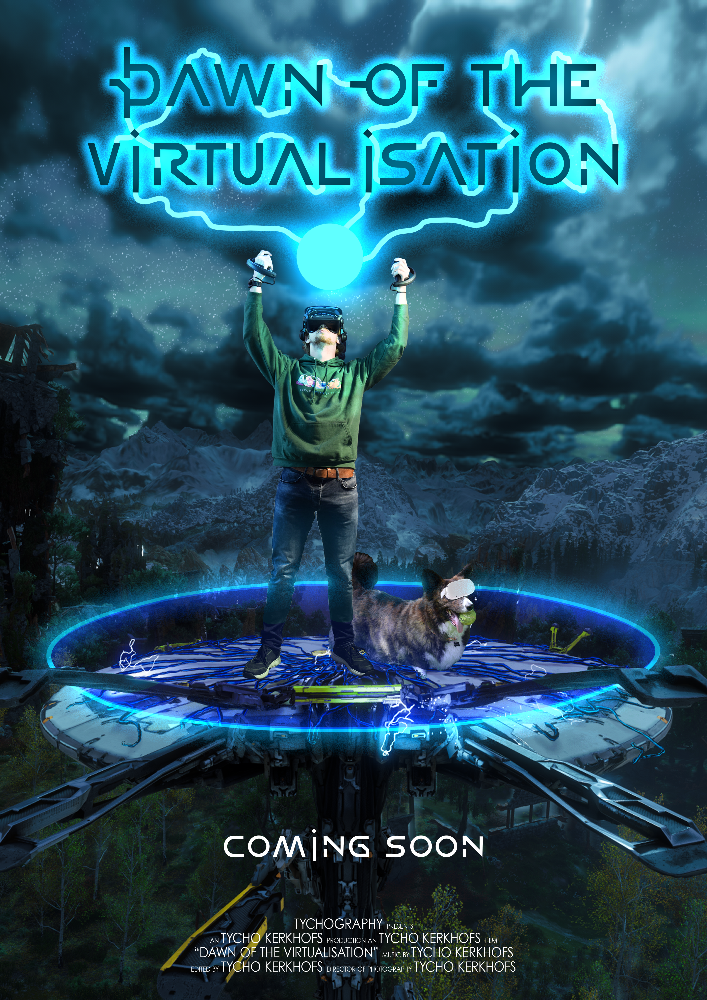

For the Imagery subject, I had to design a movie poster with myself as the main subject using Adobe Photoshop. The assignment focused on using visual elements such as composition, color, lighting, typography, and texture to communicate a specific message and create a clear visual style.
For my poster, I took inspiration from the game Horizon Zero Dawn and the movie Tron, combining elements from both to create a futuristic and game-inspired design. I used photography, image editing, and typography in Photoshop to create the final poster.

Copyright © Tycho Kerkhofs. All rights reserved.